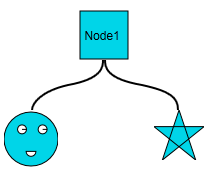
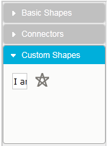

This feature allows you to add your own custom shapes to the diagram page, the symbol palette, or both. If you want to add the shape to the diagram page, you will have to add a node to the diagram page and then specify its shape as CustomShape, from the list of shapes provided.
Once you do so, use the ClientSideOnCustomShapeDrawing event (which contains the name and the Canvas context of the node) to draw the shape you desire.
However, if you want to add a custom shape to the symbol palette, refer to the section on Adding Symbol Palette Group and Items.
Appearance and Structure
The following figure illustrates the appearance and structure of the custom shapes you can add using this feature in Essential Diagram for MVC.

Figure 132: Custom Shapes Added to the Diagram Page

Figure 133: Custom Shapes Added to the Symbol Palette
Where do I find the installed samples?
To view a sample:
1. Open the Essential Diagram sample browser from the dashboard. (Refer to the Samples and Location chapter.)
2. Navigate to Getting Started > SymbolPalette Customization Demo.
 Property and Event Tables
Property and Event Tables